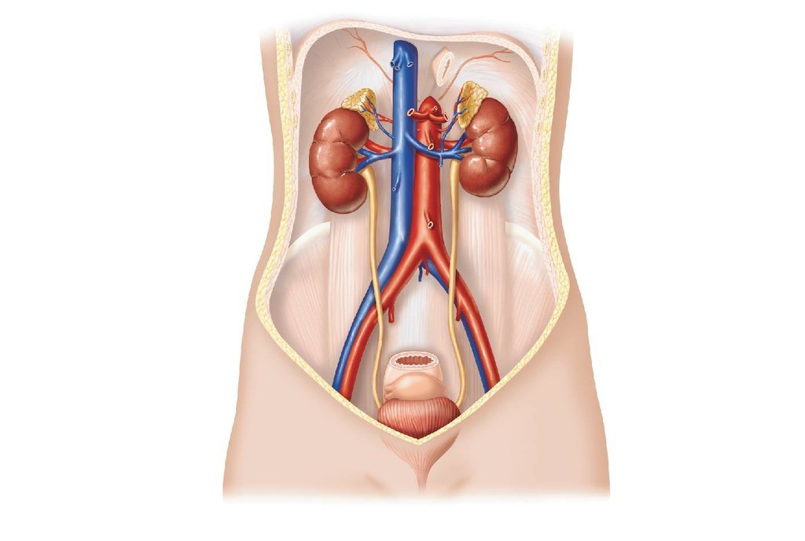

Have you ever thought about what happens when you undergo surgery? You likely have questions going through your mind, such as:
"Will I survive?"
"How long do I need to recover?"
To help alleviate these concerns, we investigated data from patients undergoing surgery at the Seoul National University Hospital, Republic of Korea.

Take a step back to see how different surgical departments compare.
Interact with the Sankey Diagram below and see: